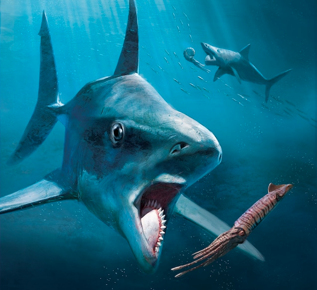
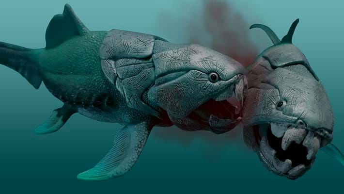
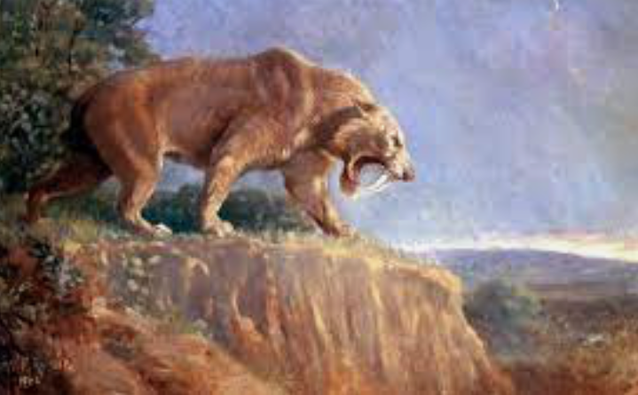

Featured Species
Helicoprion
The Helicoprion is an Extinct Species related to the modern day Sharks. They lived 270 Million years ago During the early Permian period in the Paleozoic era. The cause of their extinction is due to the "Permian Extinction" which occured 252 Million years ago due to most Extinction event's "climate change" tectonic plates were pushing until that one day lava was floing on th ground burning on the prehistoric trees putting dust and gas in the which spreading
Dunkleosteus
The
Woolly Mammoth

Great Auk

Laughing owl

Passenger Pigeon

Steller's Sea Cow

Dodo

Smilodon
>The Saber-Tooth Tiger, or Smilodon, went extinct around 10,000 years ago at the end of the last Ice Age. While the exact cause of their extinction is not known, it is thought to be related to climate change and the decline of their prey.